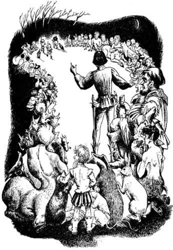
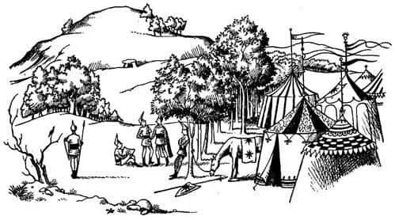
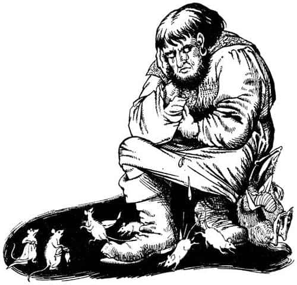

Eski Narnia Tehlikede
Faunlarla karşılaştıkları yer Dans Bahçesi’ydi. Caspian ve arkadaşları büyük toplantı gecesine kadar orada kaldılar. Yıldızların altında uyumak, kuyu suyundan başka su içmemek, genellikle kabuklu yemiş ve meyvelerle karın doyurmak, kalede goblenle kaplı odasındaki ipek çarşaflardan, yan odadaki altın ve gümüş tabaklarda sunulan yemeklerden ve onun emirlerini bekleyen hizmetçilerden sonra, tuhaf bir deneyimdi. Fakat hiçbir şeyden bu kadar zevk almamıştı. Uykusu asla bundan daha dinlendirici, yemekler asla bundan daha lezzetli olmamıştı. Şimdiden güçlenmeye başlamıştı. Yüzü bir kral yüzünü andırıyordu.
Büyük gece geldiğinde, çok çeşitli tuhaf tebaası ağır ağır, birer ikişer ya da üçlü, altılı, yedili gruplar halinde bahçeye girdi – dolunay yaklaşıyordu – Caspian kalabalığı görüp bağlılık sözlerini duyduğunda göğsü gururla kabardı. Tanıdığı herkes oradaydı: Şişman ayılar, kızıl cüceler, kara cüceler, köstebekler, porsuklar, tavşanlar, kirpiler ve henüz tanışmaya fırsat bulamadığı diğerleri; tilki gibi kızıl renkli beş Faun, baştan ayağa silahlı, tiz sesli bir trompeti takip eden konuşan fare grubu, birkaç baykuş ve yaşlı kuzgun da oradaydı. En arkadan da (bu Caspian’ı çok heyecanlandırdı) sentorlarla birlikte, sırtında bir sepet dolusu cüce taşıyan, Ölüadamlar Tepesi’nden gelen, öyle çok büyük olmasa da gerçek bir dev olan Kazmakürek geldi. Cüceler devin onları taşıma isteğini kabul etmişlerdi etmesine, ama bunun tıpkı dalgalı denizde yapılan bir yolculuğa benzeyeceğini tahmin edebilselerdi şayet, yürümeyi tercih ederlerdi.
Şişman ayılar, toplantıyı sonraya, hatta ertesi güne bırakarak önce ağızlarına layık bir ziyafet çekmek istiyorlardı. Pervane ve diğer sincaplar hem yiyip hem de konuşabileceklerini söylediler; neden toplantı ve ziyafet aynı anda olmasındı ki? Bastıbacak ve fareleri, ziyafet ve toplantının ertelenebileceğini söyleyerek o gece Miraz’ın kalesine saldırmayı, köstebeklerse harekete geçmeden önce bahçenin etrafına siper kazmayı teklif ettiler. Ne var ki Faunlar kutsal bir dansla işe başlamanın daha iyi olacağını düşünüyordu. Yaşlı kuzgun, yemekten önce yapılacak doğru dürüst bir toplantının çok uzun süreceği konusunda ayılarla aynı fikirde olmasına rağmen, tüm topluluğa, kısa bir konuşma yapmasına izin verilmesi için yalvardı. Fakat Caspian, sentorlar ve cüceler bu teklifi kabul etmedi ve gerçek bir savaş konseyinin hemen toplanması için ısrar ettiler.
Tüm diğer yaratıklar bir çember oluşturacak şekilde oturmaya ikna edildiğinde (bu biraz zor oldu) ve Pervane’nin, ondan başka konuşan yokken ileri geri koşturup, “Susun! Kral’ın konuşması için herkes sussun!” demesine engel olduklarında, Caspian, biraz da ürkekçe, ayağa kalktı. “Narnialılar!” diye söze başladı fakat sürdüremedi, çünkü Tavşan Zıpzıp o anda “Şşşş! Yakınlarda bir yerde bir insan var” demişti. Hepsi insanların gözünde birer av hayvanı olduklarının bilincindeydi – birer heykel gibi hareketsiz kalakaldılar. Burunlarını Zıpzıp’ın gösterdiği yöne çevirmişlerdi.
“İnsan gibi kokuyor, ama tam da öyle değil” diye fısıldadı Mantarsever.
“Düzenli adımlarla yaklaşıyor” dedi Zıpzıp.
“İki porsuk ve siz üç cüce oklarınızı hazırlayıp onu karşılamaya gidin, ama sessiz olun” dedi Caspian.

Kara cüce yayına bir ok yerleştirirken, “Birinin hesabını göreceğiz” dedi acımasız bir edayla.
“Yalnızsa vurmayın” dedi Caspian, “Yakalayın.”
“Neden?” diye sordu Cüce.
“Söyleneni yap” dedi sentor Fırtına.
Üç cüce ve iki porsuk sinsice bahçenin kuzeybatısındaki ağaçlara doğru koşarken herkes sessiz sedasız bekliyordu. Sonra cücelerden geldiği anlaşılan keskin bir ses duyuldu, “Dur! Kimsin sen?” ve ani bir sıçrama. Aynı anda Caspian’ın çok iyi tanıdığı bir sesin, “Tamam, tamam silahsızım, bileklerimi tutun isterseniz değerli porsuklar, fakat dişlerinizi geçirmeyin. Kral’la konuşmak istiyorum” dediğini duydular.
“Doktor Cornelius!” diye bağırdı Caspian sevinçle ve sonra eski öğretmenini selamlamak üzere ileriye doğru koştu. Herkes etraflarını sarmıştı.
“Pöh!” dedi Nikabrik. “Dönme bir cüce. Yarı cüce – yarı insan! Kılıcımı gırtlağına sokayım mı?”
“Sakin ol Nikabrik” dedi Yaygaracı. “Atalarının günahını bu yaratığa yükleme.”
“Bu benim en büyük dostum ve yaşamımı kurtaran kişidir” dedi Caspian. “Dostumu beğenmeyen biri varsa ordumu hemen terk edebilir. Sevgili Doktor, seni tekrar gördüğüme çok memnunum. Bizi nasıl buldun?”
“Küçük bir sihirbazlıkla Majesteleri” dedi aceleyle, onca yolu yürümekten nefes nefese kalan doktor. “Fakat bunu anlatacak zaman yok şimdi. Hepimizin burayı acilen terk etmesi gerekiyor. Birisi ihanet etti ve Miraz şimdiden harekete geçti. Yarın öğlen olmadan etrafınızı çevirecekler.”
“İhanet mi?” dedi Caspian, “Kim?”
“Başka bir dönme cüce tabii” dedi Nikabrik.
“Atın Yıldırım” dedi Doktor Cornelius, “sen düştüğünde kaledeki ahırına döndü. Zavallı hayvanın elinden başka bir şey gelmezdi tabii. O zaman senin kaçtığını anladılar. Miraz’ın işkence odalarında sorguya çekilmemek için ortadan kayboldum. Kristal küreme bakarak sizi nerede bulabileceğimi öğrenmeye çalıştım. Fakat bütün gün – bu, dün değil evvelki gündü – ormanda iz süren gruplar gördüm. Dün, ordusunun yola çıktığını öğrendim. Her yerde iz bırakmışsınız. Büyük dikkatsizlik. Ormanı senin safkan cücelerin kadar – ehe – tanıdığımı sanmıyorum ama – her neyse, Miraz bazı belirtilerden Eski Narnia’da hayatın devam ettiğini anladı ve harekete geçti.”
Aşağıdan, doktorun ayaklarının dibinden, “Hurraa!” diye minik ve tiz bir ses duyuldu. “Gelsinler! Tek isteğim, kralımın bana ve halkıma en ön safta görev vermesi.”
“Bu da ne?” dedi Doktor Cornelius. “Ekselanslarının ordusunda çekirgeler mi var, yoksa sivrisinekler mi?” Aşağı eğilip gözlüklerinin üzerinden dikkatle baktıktan sonra gülmeye başladı.
“Aslan aşkına!” dedi, “Bu bir fare. Senyör Fare, sizinle yakından tanışmak isterim. Böylesine cesur bir hayvanla tanışmaktan şeref duyarım.”
“O şeref bana ait bilge adam” dedi Bastıbacak. “Orduda sana saygıda kusur eden kim olursa, cüce olsun, dev olsun, kılıcıma hesap vermek zorunda.”
Nikabrik, “Bu budalalıklarla geçirecek zamanımız yok” dedi ve sordu: “Planımız nedir? Savaşmak mı, kaçmak mı?”
“Gerekirse savaş” dedi Yaygaracı. “Ama hazır değiliz, ayrıca burası da kolay savunulabilir bir yer değil.”
“Kaçma fikrinden hoşlanmadım” dedi Caspian.
“Duydunuz mu? Duydunuz değil mi?” dedi şişman ayılar. “Ne pahasına olursa olsun kaçmak yok. Hele akşam yemeğinden önce asla olmaz; yemekten sonra da yapacak değiliz ya—”
“Kaçan kurtulur diye bir şey yok” dedi sentor. “Biz düşmana göre değil, düşman bize göre hareket etsin – emin bir yer bulalım.”
“Bu akıllıca Ekselansları, bu akıllıca” dedi Mantarsever.
“Peki nereye gideceğiz?” diye sordu birileri.
“Ekselansları” dedi Doktor Cornelius “ve tüm yaratıklar! Bence nehirden aşağı, doğuya, büyük ormanlara kaçmalıyız. Telmarlılar bu bölgeden nefret eder. Her zaman denizden ve denizin ötesinden gelecek bir şeylerden korkmuşlardır. Büyük ormanların oluşmasına izin vermelerinin nedeni budur. Efsaneler doğruysa, Antik Cair Paravel nehrin ağzında olmalı. O taraflarda herkes bizim dostumuzdur ve düşmanımızdan da nefret ederler. Aslan’ın Kümbeti’ne gitmemiz gerekiyor.”
Kalabalıktan, “Aslan’ın Kümbeti mi?” sorusu yükseldi. “Neden bahsettiğini bilmiyoruz.”
“Narnialıların antik dönemde büyülü bir yerde inşa ettiği, içinde sihirli bir taşın bulunduğu – belki hâlâ oradadır – büyük bir höyük. Ormanın kenarındadır. Höyüğün içinde koridorlar ve mağaralar varmış. Taş, en ortadaki mağaradaymış. Orada bütün erzaklarımız için yeterli yer vardır. Ayrıca içimizden saklanmaya en fazla ihtiyacı olanlar ve yeraltı yaşamına alışkın olanlar mağaralarda kalabilir. Geri kalanımız ormanda gizlenebilir. Gerekirse hepimiz (değerli dev hariç) höyüğe sığınır, orada açlık dışında, her türlü tehlikeden uzakta oluruz.”
“Aramızda bilge bir adamın bulunması iyi bir şey” dedi Mantarsever; ancak Yaygaracı sessizce mırıldandı: “Çorba ve kereviz! Liderlerimiz keşke bu eski kocakarı hikâyeleri yerine, yiyecek ve silahları düşünselerdi.” Ne var ki herkes Cornelius’un teklifini onaylamıştı. Yarım saat sonra yürüyüşe geçtiler. Güneş doğmadan önce Aslan’ın Kümbeti’ne ulaşmışlardı.
Kesinlikle muhteşem bir yerdi – bir sırtın üzerinde uzun süre önce ağaçlarla kaplanmış yuvarlak yeşil bir tepecik ve tepenin içine açılan küçük bir kapı vardı. İçerisini bilmeyenler için tüneller karmakarışık bir labirent oluşturuyordu. Duvarlar ve tavan düzgün taşlarla kaplanmıştı. Caspian alacakaranlıkta baktığında taşların üzerinde tuhaf şekiller, yılana benzer motifler ve birçok aslan resmi gördü. Bütün bunlar, dadının ona anlattığı Narnia’dan daha da eski bir Narnia’ya ait gibi görünüyordu.
Kümbetin içine ve çevresine yerleştikten sonra şansları tersine dönmeye başladı. Kral Miraz’ın izcileri çok geçmeden onların yeni sığınağını buldu. Miraz ve ordusu ormanın kenarına geldi. Her zaman olduğu gibi, düşman tahmin ettiklerinden daha güçlüydü. Art arda gelen bölükleri gören Caspian’ın cesareti kırılmıştı. Miraz’ın adamları ormana girmekten korkmalarına rağmen onun emriyle ormanın içine, hatta bazen kümbetin dibine kadar yaklaşıp saldırıyorlardı. Anlaşılan Miraz’dan ormandan korktuklarından daha fazla korkuyorlardı. Caspian ve komutanları da şüphesiz ormanın dışına pek çok karşı saldırı düzenliyor, günler ve geceler boyu savaşıyorlardı, ancak durumları pek parlak değildi.

Sonunda her şeyin alabildiğine kötü gittiği bir gece gelip çattı. Gün boyu şiddetle yağan yağmur, akşam olunca durmuş, yerini keskin bir soğuğa bırakmıştı. Caspian o ana kadarki en büyük saldırıyı planladı. Herkes tüm umutlarını bu saldırıya bağlamıştı. Caspian, çoğunluğunu cücelerin oluşturduğu bir birlikle şafakta Miraz’ın ordusunun sağ kanadına saldıracaktı. Çatışmaların en şiddetli anında Dev Kazmakürek, sentorlar ve en vahşi hayvanlardan bir grup başka bir cepheden saldırıya geçip sağ kanadın ordunun geri kalanıyla irtibatını kesmeye çalışacaktı. Ancak devlerin akıllı olmadığı konusunda kimse Caspian’ı uyarmamıştı (Çünkü şimdilerde kimse eskiden Narnia’da olup bitenleri hatırlamıyordu). Zavallı Kazmakürek bir aslan kadar cesurdu cesur olmasına, ama akıl konusuna gelince, bir mercimek tanesi kadar bile aklı yoktu. Yanlış zamanda yanlış yerden saldırmış, hem kendi birlikleri hem de Caspian’ınkiler ağır kayıplar vermişti. Düşmana verdikleri zarar ise çok azdı. Ayıların en iyisi sakatlanmış, sentorlardan biri ağır biçimde yaralanmıştı. Caspian’ın grubunda yaralanmayan çok az kişi vardı. Islak ağaçların altında, yetersiz yemeklerini yemek üzere toplandıklarında hepsi üzgündü.

En üzgünleri Dev Kazmakürek’ti kuşkusuz. Her şeyin kendi hatası olduğunu biliyordu. Sessizce oturmuş, dinlenmeye çekilen kasvetli fare ordugâhına bakıyor, burnunun ucunda toplanıp büyük bir şapırtıyla farelerin üzerine düşen iri gözyaşları döküyordu. Fareler sıçrayarak kalkıyor, battaniyelerini sıkıyor, kulaklarına kaçan suyu çıkarmaya çalışıyorlardı. Tiz ve güçlü seslerle deve, “Zaten yeteri kadar ıslandık, bir de gözyaşların çıktı başımıza, hiç düşünce yok mu sende?” diye sızlanıyorlardı. Sonra diğerleri uyandı ve farelere, savaşa bir konser grubu olarak değil, izci olarak katıldıklarını hatırlatarak, neden gürültü yaptıklarını sordular. Kazmakürek, acısıyla baş başa kalabileceği bir yer bulmak üzere parmak ucunda yürüyerek uzaklaşmaya çalışırken birinin kuyruğuna bastı ve bir şey onu ısırdı (sonraları bunun bir tilki olduğunu söylediler). Herkesin sinirleri bozuktu.
O sırada kümbetin kalbi olan gizli odada Kral Caspian, Cornelius, porsuk, Nikabrik ve Yaygaracı toplantıdaydılar. Sihirli Taş Masa, tavanı eski tarz kalın sütunlarla desteklenen odanın ortasındaydı – tam ortadan çatlamıştı – üzerinde, yazıya benzeyen işaretler vardı. Taş masa üstündeki yazılar, kümbetin yapımından önceki o eski zamanlarda, yüzyıllar boyu esen rüzgâr, yağan yağmur ve kar nedeniyle neredeyse silinmişti. Sihir gücü yüksek olan masaya ne dokunuyor ne de etrafında oturuyorlardı – sıradan işler için elverişli değildi. Biraz ötede, soluk yüzlerini aydınlatan ve duvarlara kocaman gölgeler düşüren seramik bir kandil bulundurulan, kaba saba bir ahşap masanın iki yanındaki kütüklerde oturuyorlardı.
“Eğer ekselansları uygun görürse” dedi Mantarsever, “boruyu kullanmanın tam zamanıdır.”
Caspian günler önce onlara, sahip olduğu bu değerli şeyden söz etmişti.
“Ona çok ihtiyacımız olduğu kesin” diye cevapladı Caspian. “Ancak en çok ihtiyaç duyduğumuz anın şu an olup olmadığına karar vermek zor. Bu hakkımızı şimdi kullandık diyelim, ya bundan daha acil bir durumla karşılaşırsak ne olacak?”
“Bu mantıkla” dedi Nikabrik, “Ekselansları son ana kadar onu kullanmayacak.”
“Ben de aynı fikirdeyim” dedi Doktor Cornelius.
“Ya sen ne düşünüyorsun, Yaygaracı?” diye sordu Caspian.
“Ah, bence” dedi umursamaz bir tavırla dinleyen kızıl Cüce, “Ekselansları biliyor ki boru ve şuradaki kırık taş parçası ve büyük Kralınız Peter ve Aslan – hepsi, ayışığındaki yumurtaya benziyor. Ekselansları boruyu çalsa da çalmasa da fark etmez. Bu konuyla ilgili olarak ısrar edeceğim tek şey, orduya söylenilmemesi. Hayal kırıklığıyla sonuçlanacak (benim düşünceme göre) büyülü bir yardım umudu yaratmanın yararı yok.”
“O zaman Aslan adına, Kraliçe Susan’ın borusunu çalacağız” dedi Caspian.
“Efendim, ondan önce yapılması gereken bir şey var” dedi Doktor Cornelius, “Yardımın ne şekilde gerçekleşeceğini bilmiyoruz. Denizler ötesinden Aslan gelebilir. Ancak ben, geçmişten Yüce Kral Peter ve güçlü arkadaşlarının geleceğini umuyorum. Her iki durumda da yardımın bulunduğumuz yere geleceğinden emin olamayız.”
“Doğru söze ne denir!” dedi Yaygaracı.
“Sanırım” diye devam etti bilge adam, “onlar – ya da o – Eski Narnia’da bir yere gelecekler. Burası, şu bulunduğumuz yer, en eski ve en büyülü yer. Sanırım her sorunun cevabı burada verilecek. Ancak iki yer daha var: Birisi, kayıtların gösterdiğine göre, kraliyet çocuklarının Narnia’da ilk kez görüldüğü, nehrin yukarısında Kunduzbarajı’nın batısındaki Lamba Çoraklıkları. Diğeriyse aşağıda, nehrin ağzında, bir zamanlar onların kalesi olan Cair Paravel’in bulunduğu yer. Eğer Aslan gelirse, orası onunla buluşmak için en uygun yerdir. Çünkü bütün hikâyeler, onun denizler ötesindeki büyük imparatorun oğlu olduğundan ve denizden geleceğinden söz eder. Onları ya da Aslan’ı karşılamak için, her iki yere de, yani Lamba Çoraklıkları ve nehir ağzına haberciler göndermeyi isterdim.”
“Tam da düşündüğüm gibi” diye mırıldandı Yaygaracı. “Bu ahmaklık bize kurtuluş getirmez, olsa olsa iki adam daha kaybederiz!”
“Kimi göndermeyi düşünürdün Doktor Cornelius?” diye sordu Caspian.
“Düşman topraklarını yakalanmadan geçmeyi sincaplardan başkası zor başarır” dedi Mantarsever.
“Bütün sincaplarımız (ki sayıları da öyle çok değil)” dedi Nikabrik, “iyi savaşçılardır. Böyle bir görevde güvenebileceğim tek kişi Pervane’dir.”
“Öyleyse Pervane olsun” dedi Kral Caspian. “Peki diğer haberci kim olacak? Biliyorum sen gidersin Mantarsever, fakat yeterince hızlı değilsin. Sen de hızlı değilsin Doktor Cornelius.”
“Gitmek istemiyorum” dedi Nikabrik. “Etrafımızdaki bu insanlar ve hayvanlar arasında bir de cücelerin haklarını savunacak bir temsilci bulunmalı.”
“Yüksükler ve yıldırımlar!” diye bağırdı Yaygaracı hiddetle. “Kral’la böyle mi konuşulur? Beni gönderin efendim, ben giderim.”
“İyi de, borunun büyüsüne inanmadığını sanıyordum Yaygaracı” dedi Caspian.
“Elbette inanmıyorum Ekselansları. Ama bunun boruyla ilgisi yok. Kaz kovalarken ölmektense burada ölmeyi tercih ederim. Sen benim kralımsın. Nasihat etmekle emir almak arasındaki farkı bilirim. Siz nasihatimi dinlediniz, ben de emrinizi dinliyorum.”
“Bunu asla unutmayacağım, Yaygaracı” dedi Caspian. “Biriniz Pervane’yi çağırsın. Boruyu ne zaman çalayım?”
“Güneşin doğmasını bekleyelim, Ekselansları” dedi Doktor Cornelius. “Bazen beyaz büyünün gücünü etkiliyor bu.”
Birkaç dakika sonra gelen Pervane’ye görevi açıklandı. Birçok sincap gibi o da (burnu büyüklüğü bir yana) cesur, hevesli, enerjik, yaramaz ve heyecanlıydı. Görevini öğrenir öğrenmez yola çıkmak için sabırsızlanmıştı. Yaygaracı’nın daha kısa bir yolculukla nehrin ağzına, onun da koşarak Lamba Çoraklıkları’na gitmesi planlanmıştı. Yemeklerini aceleyle yedikten sonra, Kral, Porsuk ve Doktor’un ateşli teşekkürleri ve iyilik dilekleriyle yola çıktılar.